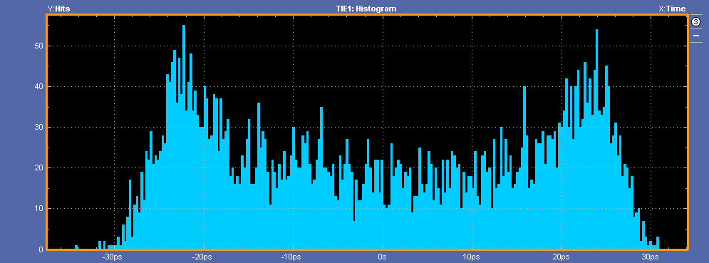

Jitter(抖动)¶
TIE(Time Interval Error)¶
TIE是抖动分析的基础，抖动分析中的peak-peak jitter，jitter分离都是基于TIE。 如图所示，TIE是比较理想时钟(图中Golden clock)和被测量时钟(图中Jitter Clock)之间的相位偏差
理想时钟(Golden clock)的概念¶
其中的理想时钟概念最为关键，理想时钟不能凭空产生， 所以需要知道理想时钟的来源。在测量仪器中，理想时钟的产生一般有如下的方法:
- 固定时钟(Constant Clock)
- 嵌入时钟(Self triggered CRU)
- 独立的时钟(Explicit clock CRU)
固定时钟，相当于示波器自己通过采样的信号，平均之后计算出理想的时钟。 可以看作是CRU的带宽无限大。
嵌入时钟，是自己采用自己，当然需要通过低通滤波器，可以选择为1阶或者2阶。 CRU的阶数取决于使用什么标准去测。
独立时钟，应用于带有Forward Clock的系统。比如HDMI系统，有单独的clock通道。
总而言之，采用哪一种恢复理想时钟的方法取决于具体的应用，不同的CRU或者带宽 测量出的jitter会有差别，而TIE的分析则必须有理想时钟，所以要正确的选择CRU 恢复出理想时钟。
TIE的分析方法¶
TIE是最原始数据，可以在不同的角度来看待，其中有时域的Time trend, 频域(对时域FFT)以及统计域(直方图histogram)。
下图是泰克示波器抖动分析软件的Time trend图,横坐标 是时间，间隔是UI； 纵坐标是抖动值，即前述的理想和被测量时钟之间的误差。 通过Time Trend图可以看出一些直观的信息，比如这个抖动是接近于正弦波， 但有一些噪声，还可以看出peak-peak Jitter(注意这个概念， 详细可以看[这里](#Peak-Peak Jitter和Total Jitter的关系)

下图是TIE频谱，通过对Time trend做FFT可以通过频域分析，通过频谱 可以清晰的看出抖动的频点是7MHz。横坐标是频率，纵坐标是对于FFT的值，图中单位 是ps，只是相对值，并不是代表能量。
下图是统计域的直方图，可以看出抖动分布。横坐标是抖动值，纵坐标 是每个bin里面抖动值出现的次数。如果是仅随机抖动，就会呈现出正态分布，而由于 本例是正弦波抖动，所以呈现的正弦抖动。

Peak-Peak Jitter和Total Jitter的关系¶
在测量中抖动描述有很多中方法，其中的Peak-Peak Jitter和Total Jitter是比较容易混淆的概念。
Peak-Peak Jitter可以看出是实时示波器一次采样时间范围的抖动。示波器单次采用的 时间由采样率和存储深度(Record Length)决定。例如一个20Gsa/s,存储深度为20Mpts 的单次采样，时间长度为1ms。如果被测试信号是1Gbps速率，则可以采样10^6 个周期 TIE分析也就是基于这 10^6 UI的每个UI的抖动，peak-peak jitter也就是基于这个简单计算peak-peak值。 假定示波器存储深度是无限的，那么测量出的peak-peak值也是无穷大的，应为到一定限度之后，RJ 的长尾效应会显现出来。
Total Jitter的概念，一般基于抖动分离算法。通用的模型是双狄拉克模型， 抖动分离出 $R_J$ 和 $D_J$ , 然后基于BER，对 $R_J$ 外插出Total Jitter，其公式如下。 一般的 $R_J$ 系数比较大，如下表所示,属于悲观估计。
$$T_J = Q(BER)*R_J + D_J$$
QBER系数对应表
| BER | QBER | BER | QBER | BER | QBER |
|---|---|---|---|---|---|
| $1\times10^{-3}$ | 6.180 | $1\times10^{-10}$ | 12.723 | $1\times10^{-17}$ | 16.987 |
| $1\times10^{-4}$ | 7.438 | $1\times10^{-11}$ | 13.412 | $1\times10^{-18}$ | 17.514 |
| $1\times10^{-5}$ | 8.530 | $1\times10^{-12}$ | 14.069 | $1\times10^{-19}$ | 18.026 |
| $1\times10^{-6}$ | 9.507 | $1\times10^{-13}$ | 14.698 | $1\times10^{-20}$ | 18.524 |
| $1\times10^{-7}$ | 10.399 | $1\times10^{-14}$ | 15.301 | $1\times10^{-21}$ | 19.010 |
| $1\times10^{-8}$ | 11.224 | $1\times10^{-15}$ | 15.882 | $1\times10^{-22}$ | 19.484 |
| $1\times10^{-9}$ | 11.996 | $1\times10^{-16}$ | 16.444 | $1\times10^{-23}$ | 20.000 |
带宽和抖动传递的关系¶
先提出问题，对于PLL，CRU变大还是变小，jitter才能小? 对于串行数据，情况又是怎么样?
仪器产生抖动的方法¶
抖动的种类，很多书上1都有详细的描述
抖动产生算法¶
抖动分析算法¶
-
Mike Peng Li. Jitter, noise, and signal integrity at high-speed. Pearson Education, 2007.
↩